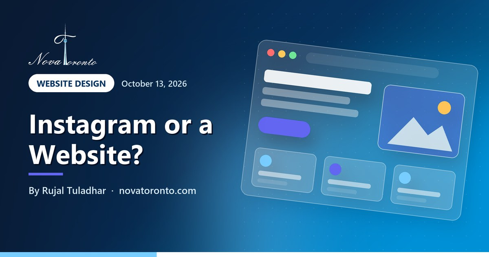

Do I need a website if I have Instagram? An honest answer
Published October 13, 2026 • By Rujal Tuladhar

Your Instagram is busy, your Facebook page has reviews, and customers already message you there. So why pay for a website? It is a fair question, and the honest answer is that some businesses do fine without one, at least for a while.
The trouble is that a social account is rented space. You do not control who sees it, how people find it on Google, or whether it is there tomorrow. Here is when Instagram alone is enough, where it starts costing you, and the smallest website that fixes the gap.
Instagram works for DM sales
Referral trades and repeat customers who already follow you
Search and Maps need more
Google's local ranking looks at relevance, distance and prominence
Up to 5 bio links
Instagram allows five, but they all point somewhere else
Accounts get suspended
Canadian owners have lost bookings while waiting on Instagram appeals
Platforms change the rules
Meta ended news on Facebook and Instagram in Canada in August 2023
Do I need a website if I have Instagram? An honest answer at a glance — the short version.
When Instagram alone is enough
Some businesses really can run on a social account for now:
- DM-driven sales. Bakers, nail techs, makers and resellers whose customers see a post, send a message and pay by e-Transfer. The sale happens in the chat, so a website adds little at first.
- Referral trades. A contractor or cleaner whose work comes almost entirely from word of mouth. Customers already have your number; Instagram is a portfolio.
- Testing an idea. If you are not sure the business will last six months, a free account is a sensible way to find out.
In each case the customer already knows you exist. Instagram is serving people who were sent to you, not helping strangers find you.
Where it costs you: Google search and Maps
Most new local customers start with a search such as "plumber near me" or "cake shop Scarborough". Google says local results are based mainly on relevance, distance and prominence, and that prominence is partly based on how many websites link to your business, along with reviews. It also says there is no way to pay for a better local ranking.
Your Google Business Profile is the free listing that appears in Search and Maps, and you can have one without a website. But Google's Business Profile guidelines ask you to provide a website that represents your business location, and they do not allow URLs that redirect or refer people to other landing pages, naming pages created on social media sites. Google's Search Central guide to getting on Google says Google finds most sites automatically once they are published, so a basic site can start appearing in search without extra work.
Where it costs you: trust and the link in bio
Plenty of buyers check whether a business is real before handing over money or letting someone into their home. A site on your own domain, with your address or service area, prices or starting prices, and a contact form, answers that question quickly. A social profile can answer it too, but only for people who already use that app.
Instagram has allowed up to five links in a profile bio since April 2023, and you can drag them into the order you want. That helps, but every one of those links still needs somewhere to go: a booking page, a menu, a price list. A website is the obvious first link.
Where it costs you: lockouts and rule changes
Your social account exists on the platform's terms, and accounts do get suspended, sometimes, owners say, by mistake. In September 2025, CTV News reported on Saskatchewan business owners who said their Instagram accounts were wrongly suspended, including a Saskatoon photographer who expected to lose about $3,000 in business that month. While an appeal plays out, your shop window is closed.
Platforms also change the rules for everyone at once. In Canada, Meta began ending news availability on Facebook and Instagram in early August 2023, after Parliament passed the Online News Act. The federal government says the Online News Act received royal assent on June 22, 2023 and took effect on December 19, 2023. Local news outlets that had built their audience on Facebook lost that channel. Your bakery is not a news outlet, but the lesson is the same: you do not set the rules on someone else's platform.
The minimum: a one-page website
You do not need a 20-page site. For most Instagram-first businesses, one page does the job:
- What you do and the areas you serve, in plain words people search for.
- Prices or starting prices, and how to book or order.
- Phone, email, a contact form and your hours.
- A few of your best photos, and links to your Instagram and Facebook.
- Your own domain, registered in your name.
Connect that page to your Google Business Profile, put it first in your Instagram bio, and keep posting as you do now. Instagram keeps doing the work it is good at, and the website catches people who search.
The bottom line
If your customers already know you and message you to buy, Instagram can carry the business for now. If you want people who search Google and Maps to find you, or you would be in trouble if your account were locked tomorrow, you need a website, and a simple one is enough to start. Social media brings attention; your website is the address you own.
For the paid side, see Google Ads vs Meta ads: which a GTA business should run first, and if you are tempted to build it yourself, read AI website builders in 2026: real prices and where they break. Nova Toronto's website design starts at $900 for a three-page starter site, and our free AI course for beginners can help you write the words yourself.
Common questions
Do I need a business website if I have an Instagram and Facebook page?
Not always. If your sales come from referrals and DMs from people who already follow you, social media can be enough while you test the business. If you want to be found on Google Search and Maps, or you would lose customers if your account were locked, a simple website on your own domain is worth it.
Can I use my Instagram link as my Google Business Profile website?
Google's Business Profile guidelines ask for a website that represents your business location and do not allow URLs that redirect or refer people to other landing pages, naming pages created on social media sites. A page on your own domain is the safer choice.
Can I get on Google Maps without a website?
Yes. A Google Business Profile is free and does not require a website. Google says local ranking depends on relevance, distance and prominence, and prominence is partly based on how many websites link to your business and on your reviews.
What should a one-page small business website include?
What you do and where, prices or starting prices, how to book or order, phone, email, hours, a contact form, a few strong photos and links to your social accounts. Put it on a domain registered in your own name.
Want this working in your business?
Book a free 15-minute call and we'll map out which of these would actually save you time and win you customers.
Book a Free ConsultationNew to AI? Take our free 7-lesson AI course for beginners.
Sources: Google Business Profile Help: Tips to improve your local ranking on Google • Google Business Profile Help: Guidelines for representing your business on Google • Google Search Central: Get your website on Google • TechCrunch: Instagram adds support for up to 5 links in bio (April 2023) • CTV News: Sask. business owners claim wrongful Instagram suspensions (Sept 2025) • Anadolu Agency: Meta ends news availability on its platforms in Canada • Canadian Heritage: Online News Act